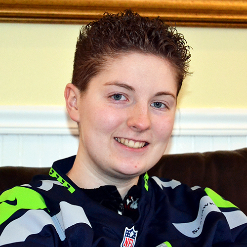

Audrey Carter

About Me
Attending Eastern Washington University to earn a Bachelor of Arts in Visual Communication Design with a minor in Film Studies. Currently a Senior and planning on graduating Spring 2015. Started building computers from parts at the age of seven, and took all art classes provided by Orchard Prairie School, City School, Centennial Middle School and West Valley High School. Also took welding and video game programming during high school at Spokane Skills Center. Attended Spokane Community College to obtain a two-year transfer degree. Started at Eastern by taking Intro to Programming to see if majoring in Computer Science was a good fit - it wasn't. Design was the second option but turned out to be the best choice with the combination of computers and art.
Skills
- Working with PCs including ability to assemble and disassemble PCs from parts and troubleshooting software and hardware
- Working with AV components inlcuding TVs, AV receivers, media players, and speaker systems
- Working with stage and theater equipment including light and sound boards, spotlights and setting up equipment
- Experience with computer programs such as Adobe (Photoshop, Illustrator, InDesign, Premiere, After Effects), Sony Vegas, and Microsoft Office (Word, Excel, Publisher, PowerPoint)
Education
- Eastern Washington University since April 2013 majoring in Visual Communication Design and minoring in Film Studies, expected graduation date June 2015
- Graduated from Spokane Community College from September 2011 to August 2013 with a Direct Transfer Associate of Arts degree
- Graduated from West Valley High School, attended September 2007 to June 2011
- Attended Spokane Skills Center with a focus in Welding and Video Game Programming, while also attending WVHS
Experience
- Eastern Washington University as an Office Aide from September 2013 to March 2014, duties included organizing folders and files, creating and updating spreadsheets, making copies, keeping offices clean and organized, and updating OrgSync data
- Rockin' B Ranch as a Stage Light Technician Intern from July to October 2011 in charge of lights, setting up and taking down technical equipment and assisting Stage Audio Technician
- West Valley High School Theatre as Theatre Stage Technician from May 2008 to June 2009 in charge of lights, audio, projectors, setting up and taking down technical equipment
- LDS Spokane Valley Church since November 2007 as Librarian, Secretary, DJ, Technician, and Stage Technician